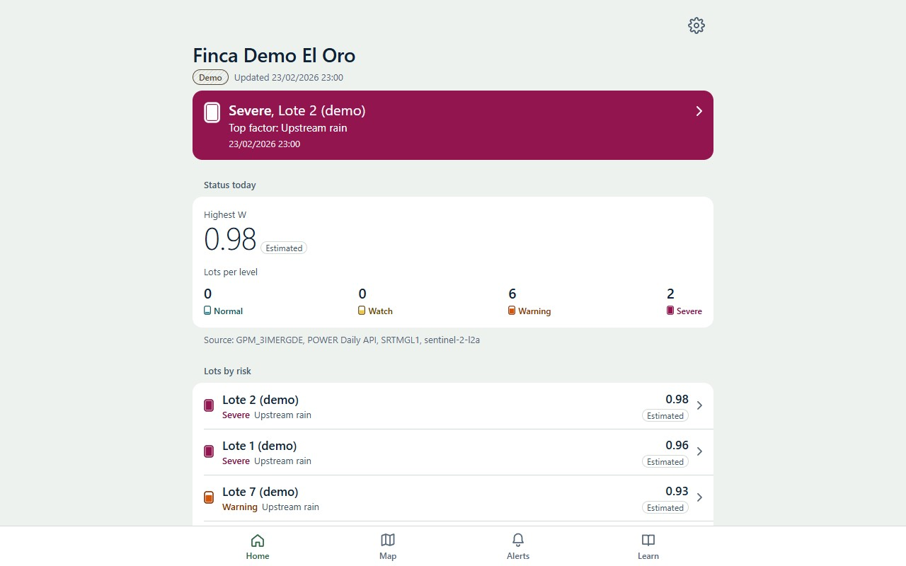
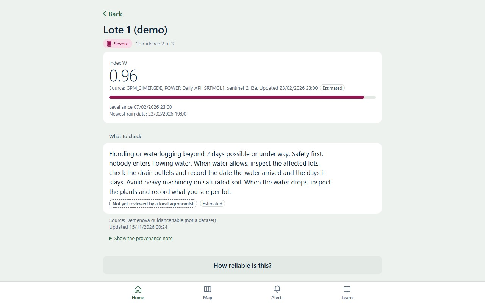
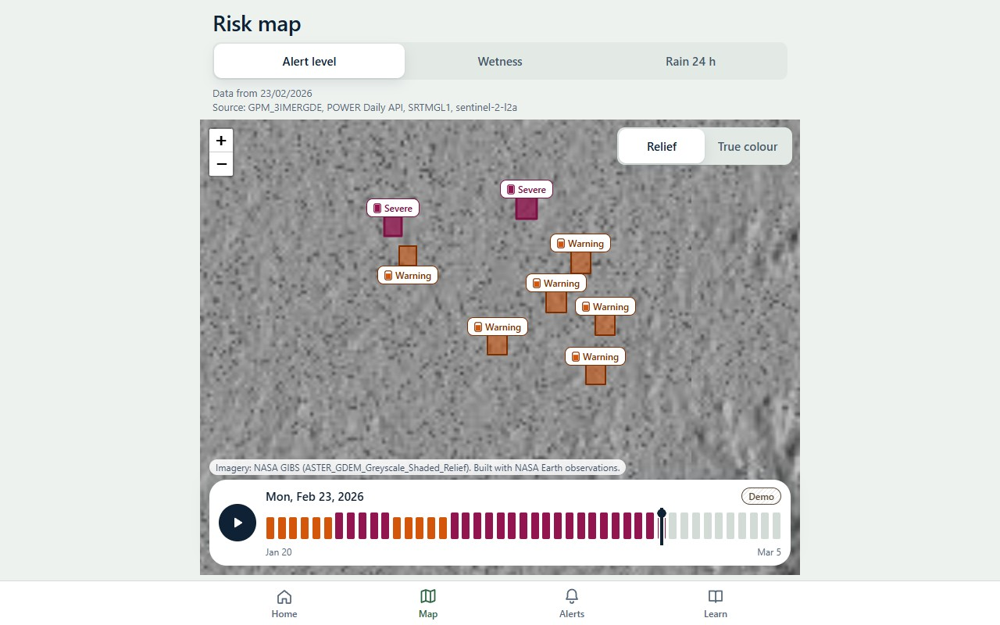
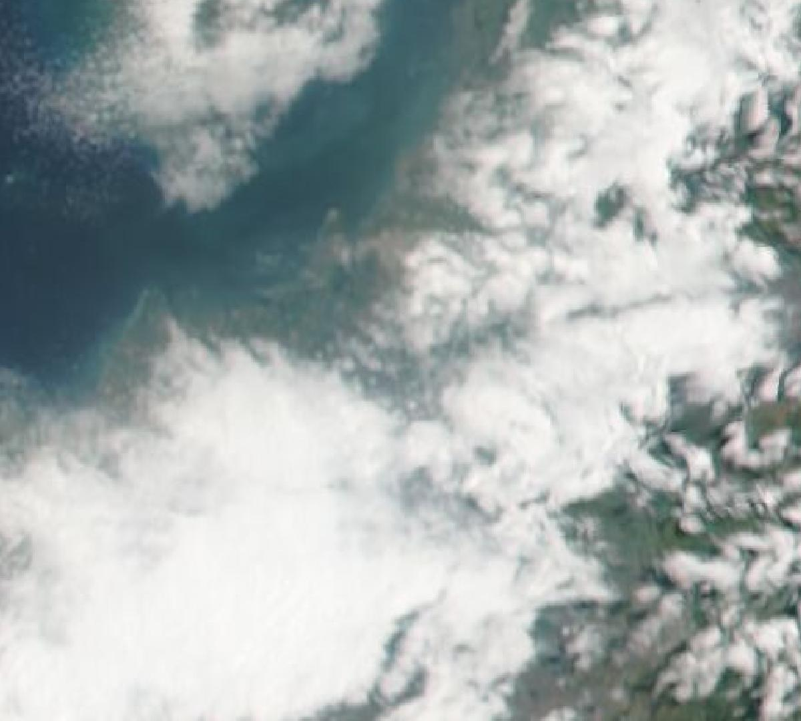

Demo replay, 20 Jan to 5 Mar 2026See how it works
Flood alerts for banana farms in El Oro
Demenova turns open, global Earth observations into waterlogging and flood alerts, field history and soil-management strategies for each lot of a banana farm.

How a lot gets its level
-
Five factors make one index
Each lot gets an alert index W from 0 to 1, built from upstream rain over the river's catchment, soil saturation, terrain wetness, local rain and the 7-day water balance.

-
Four levels, in colour and in words
W maps to four levels, always shown as colour and word: Normal, Watch, Warning and Severe. The map shows every lot for the replay day.

-
Open data from orbit
Rain from GPM IMERG, weather from NASA POWER, terrain from SRTM, vegetation from Sentinel-2 and map imagery from NASA GIBS.

Limits of the demo
- The demo farm and its 8 lots are synthetic, and every screen marks them "Demo".
- In the farm's catchment in 2026 the alerts counted 1 hit, 0 misses and 4 false alarms.
- Demenova gave no flood-specific lead time for the February 2026 flood: the wettest demo lots were already Severe from earlier storms.
- The weights and the Severe threshold (W of 0.90 or more) are design choices, chosen after the 2026 floods were seen.
- Agronomic guidance is general and not yet reviewed by a local agronomist. The app supports the agronomist's judgment.
- Alerts run only for the demo farm; a new farm needs an engine run for its location.